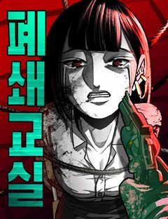
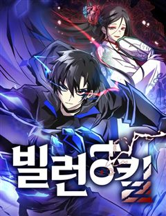
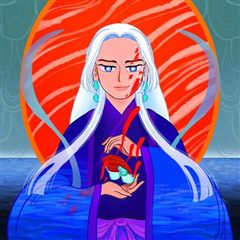
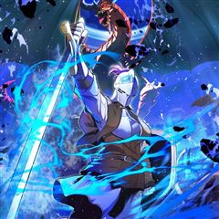
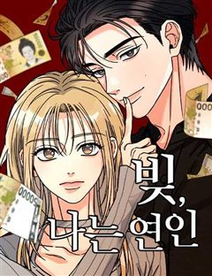
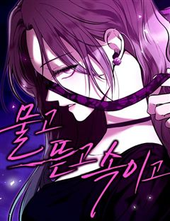

나를 바꿔줘 같은 웹툰 추천

나를 바꿔줘 · 이지호 / 호띠
나를 바꿔줘 재밌게 봤다면 이 웹툰들도 좋아할 거예요. 같은 장르이면서 사회고발, 피카레스크, 빌런 같은 요소가 겹치는 작품을, 겹치는 요소가 많은 순서로 20개 골랐어요.
2026-10-03 기준 · 네이버웹툰·카카오웹툰·레진코믹스 · 성인 작품 제외
내 취향으로 직접 골라 추천받기 →-
1
 네이버웹툰
네이버웹툰히어로 킬러
전쟁은 빌런들의 패배로 막을 내렸다. 이제 세상은 부패한 히어로들이 지배하고 있다. 그리고, 그런 히어로들 중 하나가 이화의 언니를 죽였다. 언니를 죽인 게 누구인지는 모르지만 상관없다. 한 놈씩 죽이다 보면 그중에 있을 테니까. 이화는 매일 밤 영…
빌런악역이주인공참교육걸크러시판타지네이버웹툰에서 보기 → · 히어로 킬러 같은 웹툰 → -
2

네이버웹툰폐쇄교실
하나뿐인 동생이 학교폭력으로 세상을 떠났다. 그 충격으로 어머니마저 잃을 위기에 처한 순간, 스스로를 옥죄던 질문의 답은 하나로 귀결된다. "복수." 가치를 따질 수조차 없던 내 가족을 짓밟은 너희. 이제 너희의 가치는 내가 정한다 "살고 싶다면,…
사회고발악역이주인공참교육복수극드라마네이버웹툰에서 보기 → -
3

네이버웹툰빌런투킬
동료를 살해했다는 억울한 누명을 쓰고 사망한 카시안. 모든 게 끝이라고 생각한 순간. 그의 영혼은 어느 소년의 몸에 빙의되어 빌런으로 각성한다. 선망의 대상이자 대중의 지지를 받던 탑클래스 싸이커였던 그가 하루아침에 빌런이 되다니! 그는 자신의 운명…
피카레스크빌런악역이주인공복수극판타지네이버웹툰에서 보기 → -
4
 네이버웹툰
네이버웹툰고독살인
무시 당하며 살아온 밑바닥 인생의 중년 남성 고영도는 술에 취해 사적인 장면이 담긴 영상을 남긴다. 그날의 영상이 실수로 생중계 되자, 외면 받던 그의 비참한 일상은 뜻밖의 관심을 받는다. 위로처럼 보였던 관심은 곧 고영도의 삶을 예상치 못한 방향으…
고자극드라마자극적인복수극드라마네이버웹툰에서 보기 → -
5
 네이버웹툰
네이버웹툰영혼을 보는 변호사
아버지의 죽음을 목격한 날부터 고등학생 유현재는 귀신을 보게 되고, 또한 퇴마력도 가지게 된다. 그리고, 수상한 존재 등장 - 생전에 전교 1등이었던 ‘빨간눈’의 귀신과 유현재의 만남. "변호사가 되고 싶어. 도와줘" “로스쿨? 내가 책임지고 보내줄…
사회고발판타지드라마네이버웹툰에서 보기 → -
6

카카오웹툰인어기담
내가 바뀌고 있다. 인어 고기는 불로불사의 영약이 아니었던 걸까? 고려 말, 전쟁을 피해 도망치던 한 귀족 소녀가 살기 위해 인어 고기를 먹는 순간 그 소녀의 쌍둥이 동생, 그녀가 새로이 정착한 마을 사람들, 그녀가 운명의 짝이라 믿게 된 한 남자의…
자극적인복수극판타지드라마카카오웹툰에서 보기 → -
7
 네이버웹툰
네이버웹툰악녀의 시집살이는 즐겁다
사랑 하나만 믿고 시댁살이를 견딘 ‘에시카’. 그러나 남편은 자신의 친구와 부정을 저지르고, 큰 사고까지 당하는 과정에서 전생의 기억을 떠올린다. 그녀는 바로 악녀 ‘천영령’이었고, 이곳은 책속 세상이었다는 것. 자신의 전생과 자신을 괴롭힌 사람들과…
빌런자극적인복수극판타지네이버웹툰에서 보기 → -
8

카카오웹툰던전 미식가
오랜 시간이 지나 고향에 돌아왔지만 모든 걸 잃어버린 '마롱 글라세.' 모두가 혐오하는 마물에게서만 맛을 느끼며 요리하는 기행을 벌이며, 그의 가족, 동료, 고향, 모든 걸 앗아간 드래곤에게 복수할 수 있을까?
자극적인복수극판타지드라마카카오웹툰에서 보기 → -
9
 네이버웹툰
네이버웹툰긁지 않은 복권
얼굴은 존예지만 뚱뚱한 은지는 긁지 않은 복권의 정석이라고 불린다. 남들보다 많은 양을 먹는 점을 이용해 먹방 유튜버가 되었지만, 뚱뚱한 체형 때문에 조롱 당하기 일쑤다. 저조한 조회수, 늘지 않는 구독자에 희망을 잃어가는 은지. 그러던 어느 날 우…
고자극드라마자극적인드라마네이버웹툰에서 보기 → -
10
 네이버웹툰
네이버웹툰외모지상주의
못생기고 뚱뚱하다고 괴롭힘을 당하며 루저 인생만 살아온 내가 잘생겨졌다는 이유로 인싸가 됐다. 어느 날 자고 일어났더니 갑자기 완벽한 외모와 몸을 지닌 사람이 되어 깨어난다면?
참교육복수극드라마네이버웹툰에서 보기 → · 외모지상주의 같은 웹툰 → -
11
 네이버웹툰
네이버웹툰재벌집 막내아들
[화제의 드라마 원작 웹툰!] 13년 동안의 수고를 배신으로 돌려받다니! 머슴처럼 살다 버려진 순양그룹의 실장, 윤현우. 모든 게 끝났다 싶었을 즘, 순양그룹 진 회장의 손주 진도준으로 깨어난다! 하지만 상속권과는 거리가 먼 재벌집 막내아들 진도준.…
고자극드라마복수극드라마네이버웹툰에서 보기 → · 재벌집 막내아들 같은 웹툰 → -
12

네이버웹툰빚, 나는 연인
오랜 연인과 절친한 친구의 바람. 그들의 배신으로 사랑과 우정을 동시에 잃은 이봄. 전 연인이 빌려 간 5천만 원마저 사라진 순간, 수상한 남자 백도혁이 나타난다. “사람은요, 자기 손에서 놓친 게 더 빛나 보이면 결국 다시 돌아보게 돼요.” 전 연…
고자극드라마자극적인드라마네이버웹툰에서 보기 → -
13
 네이버웹툰
네이버웹툰연애지옥
화장실에서 밥 먹는 것이 익숙한 아싸의 삶을 살았던 대학생 '서은우' 어느 날 캠퍼스 최고 여신 '이연주'가 플러팅을..? "그래 일단 만나보자 그럼 분명 뭔가 알아낼 수 있을 거야." 속을 알 수 없는 캠퍼스 여신과 아싸의 연애 일대기. 그런데..…
고자극드라마자극적인드라마네이버웹툰에서 보기 → -
14
 네이버웹툰
네이버웹툰레베카의 기도
산업혁명의 시대, 영국 런던 구빈원 출신 레베카는 밑바닥 자신의 인생을 구원하기 위해 한 상속녀의 운명을 훔친다.
고자극드라마자극적인드라마네이버웹툰에서 보기 → -
15
 네이버웹툰
네이버웹툰보이스피싱인데 인생역전
"당신에게 미래를 팝니다!" 5년 전 조직적인 음해로 한 순간에 몰락한 국민배우 강주혁. 고통스럽게 지내던 그에게 어느날 의문의 전화 한 통이 걸려온다. 바로 미래를 예언해 주는 보이스피싱! 연예계 재기와 복수를 위한 위험한 거래가 시작된다.
참교육복수극드라마네이버웹툰에서 보기 → -
16

네이버웹툰물고 뜯고 속이고
시각장애인 자선 행사장, 그 화려한 파티의 중심. 그 누구보다 아름답게 빛나는 유명 국회의원의 양딸 윤서하. 하지만 시력을 잃은 그녀에게 이 화려함은 울타리가 아닌 족쇄일 뿐이다. 이 지옥같은 족쇄에서 벗어나기 위해, 서하는 자신의 모든 것을 건 거…
고자극드라마자극적인복수극드라마네이버웹툰에서 보기 → -
17
 네이버웹툰
네이버웹툰퀘스트지상주의
[외모지상주의], [싸움독학], [인생존망]과 세계관을 공유하는 작품! 공부, 싸움, 외모. 뭐 하나 잘난 것 없는 평범한 고등학생 ‘김수현’의 눈앞에 갑자기 퀘스트창이 나타났다! 첫 번째 퀘스트, [엄마한테 사과하기]를 완료한 수현은 보상으로 키가…
참교육판타지드라마네이버웹툰에서 보기 → · 퀘스트지상주의 같은 웹툰 → -
18
 네이버웹툰
네이버웹툰시한부 황후의 나쁜 짓
정략결혼이었지만 첫사랑이었다. 황제여서가 아니라 당신이어서 사랑했다. 휠체어를 탄 몸으로 스텔라는 제국과 남편을 위해 헌신했다. 그러나 돌아온 것은 처절한 죽음. 여신은 사지가 마비되어 죽은 스텔라를 회귀시켰다. 이번 생에서도 소꿉친구를 선택하는 남…
걸크러시자극적인복수극판타지네이버웹툰에서 보기 → -
19
 네이버웹툰
네이버웹툰월스트리트 천재의 시한부 투자법
월스트리트에서 수천억 원의 자산을 일군 천재 투자자 ‘하시헌’ 하지만 돈으로도 치료할 수 없는 희귀병에 걸려 죽음을 맞이하던 순간, 10년 전 월스트리트 신입사원 시절로 회귀한다. 자신의 병을 치료할 신약을 개발하려면 천문학적인 돈이 필요하다는 사실…
고자극드라마판타지드라마네이버웹툰에서 보기 → -
20
 네이버웹툰
네이버웹툰천마육성
마교의 태왕각주 ‘사마귀’의 명령으로 화산파 출몰 지역으로 파견나간 비객조. ‘설휘’는 화산파의 절대고수 ‘구종명’에게 죽임을 당할 위기에 처한다. 그때 눈 앞에 상태창이 나타나고 정찰 임무를 받기 직전으로 회귀하게 된다. 설휘는 자신이 전생에서 죽…
악역이주인공자극적인판타지네이버웹툰에서 보기 → · 천마육성 같은 웹툰 →